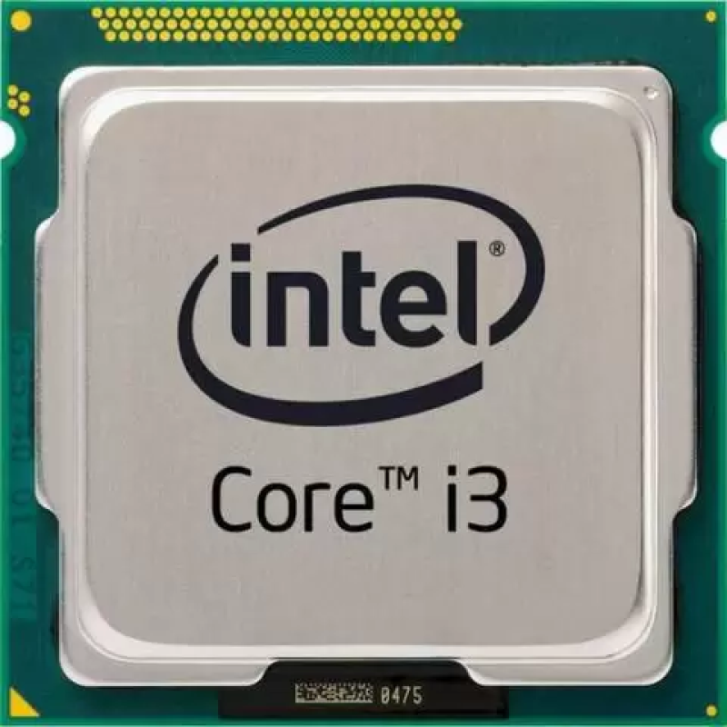
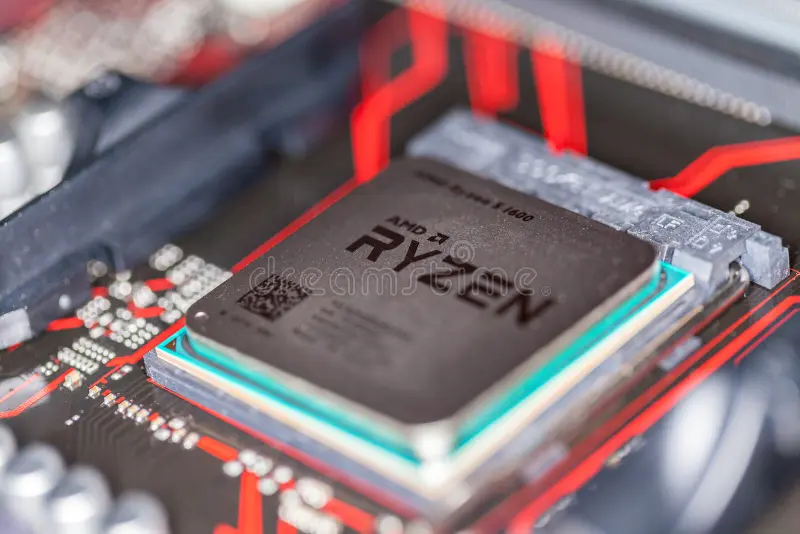

Processadores
O que são?
Um processador é um chip semicondutor que serve como a unidade central de processamento (CPU) de um computador, executando cálculos e controlando operações fundamentais para seu funcionamento. Ele é responsável por interpretar e executar instruções de programas e aplicativos.
Quais são suas funções e o que tem neles?
Função Principal
Os processadores executam cálculos e tarefas lógicas em um computador, permitindo que ele realize uma ampla variedade de tarefas, desde cálculos matemáticos até a execução de programas.
Núcleos
Os processadores modernos têm múltiplos núcleos, permitindo a execução de várias tarefas simultaneamente (multitarefa).
Clock Speed
Mede a rapidez com que um processador executa instruções. Geralmente é medido em gigahertz (GHz). Processadores potentes chegam de 3 a 4,5 GHz.
Cache
Uma memória especial de alta velocidade incorporada no processador que armazena dados frequentemente usados para acesso rápido.
Compatibilidade
Os processadores devem ser compatíveis com o soquete da placa-mãe.
Dicas
Escolher um processador adequado depende de suas necessidades, desde tarefas simples como navegar na web até jogos intensivos ou computação profissional.
Intel Core i3
Em escolas por exemplo, é comum encontrar processadores i3 da intel nos computadores, é um processador simples que atende os requisitos de navegar na web, escrever relatórios, fazer atividades e assistir vídeos.
AMD Ryzen
Para jogos é mais recomendado processadores mais fortes, pois demandam mais processamento, o indicado são processadores i5 ou i7 da intel, e ryzen 5 ou ryzen 7 da amd.